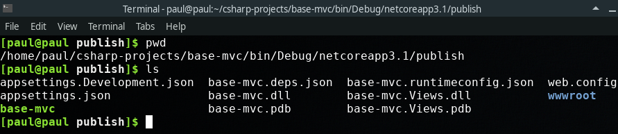

After developing a project the natural question is how do you make your project available to a larger audience?
How can your intended users interface with the code you created?
This is where the idea of hosting, or deploying comes in. We will look at both of these ideas, and talk about bringing our .NET applications to the world.
Before we deploy any applications to a remote server or cloud environment let’s discuss the steps for deploying an application to your local machine.
Throughout this class you have predominately run your applications with your IDE, Visual Studio. You simply click the green play button and your application springs to life. However, our remote server will not have access to Visual Studio and will need to run our application in a different way.
Luckily for us, Microsoft has created a way to run our applications without Visual Studio. Microsoft gives us a command line interface called dotnet that allows us to publish our .NET applications, so they can be run by another computer that has access to the dotnet runtime SDK.
The first dotnet command we are interested in is dotnet run. This command invokes the .NET SDK to run the selected .NET application.
When you click the green play button in Visual Studio it is simply running the dotnet run command behind the scenes. You can also manually run your project by navigating to your project directory in a terminal and entering dotnet run.
Let’s take a basic MVC .NET application and run it with the dotnet run CLI.
When we navigate to http://localhost:5000/ we see:
Using dotnet run, we have successfully run our .NET application, and it started our web app on the appropriate ports. This is essentially what Visual Studio is doing for us behind the scenes when we push the green play button.
Being able to run our project is one thing, but right now our project is a combination of the code we have written, and all the libraries we have loaded as dependencies into our project. It would be great if we could package all of these together to make them easier to transport between computers. This is where the dotnet publish command comes in. This also bundles in all the requisite files so that the newly published project can be run with a lighter version of the .NET SDK. Any computer that has the runtime .NET SDK will be able to run our application.
Let’s take a look at what happens when we run dotnet publish inside of our app.

This is telling us that it created a few new directories with our newly packaged project in bin/Debug/netcoreapp3.1/publish.
Exploring this directory, we see a few things:
And from here we can simply run our application with just the dotnet runtime using dotnet base-mvc.dll.
The files that are created by our source code are known as build artifacts.
Although these examples are still local, they represent how we will run our application on a server.
The steps to run a project on a server are:
dotnet runtime SDK on remote serverIn the previous section we learned how to host a .NET application on our local machine. This is a good exercise because it illustrates the steps necessary to deploy a project. However, there are a few issues with hosting an application on your local machine.
The first issue is that of networking. Our application is deployed on our machine, but it is only accessible on that machine and other computers on our local network. You must know the internal IP address of your computer in order to share your application with others on your network. However, we built our application for general users of the internet. Our local machine is connected to the internet, but it has no way of routing traffic on the internet to our local machine. We have a networking issue.
The second major issue is that of availability. Even if our local machine was available to general internet, users would only be able to access our application when our computer is on and running the application. Ideally, we will have a dedicated server that is always on and running our application, so that users can connect to our application at all times.
The final issue is that of discovery. Even if a general internet user could access our local machine, and our machine was always on and running our application, a general internet user would have to know our exact IP address in order to access our application. Most Internet Service Providers assign IP addresses dynamically. So your IP address might change over time. We need a permanent IP address. Better yet, we need a permanent name that a general internet user can use to access our application.
All three of these issues are solved by cloud hosting:
Cloud hosting allows us to overcome these issues by providing us with an always-on server, that has a public IP address that can be associated with a domain name.
“Cloud” is a term used a lot in technology, but it’s really just a collection of servers that are available on the internet. These servers usually contain additional services like data backup, or privacy in the form of authentication, or encryption, and more.
You can set up your own servers and configure them to always be on, and to have public-facing IP addresses. However, this can take a fair amount of setup. Most companies these days use cloud hosting providers that do this configuration for them. So you no longer need to own a server to access a server. You simply rent one from a cloud services provider. Microsoft Azure is one of these cloud services provider, and it is the tool we will be using throughout this class.
Using Azure, we can easily, quickly, and cheaply start up our own server that has a public IP address, is always on, and can be configured with a domain name.
After creating a server, we will be able to copy over the build artifacts we created using dotnet publish, and then run our application. It will then be accessible via the internet at a public IP address, and it will always be on and running. This allows our users to interface with our application.